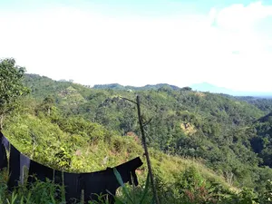
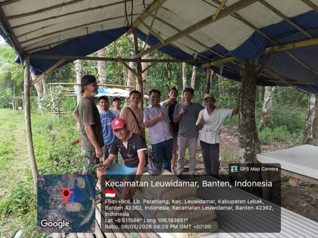
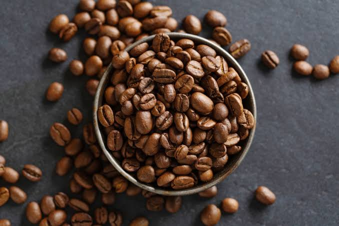
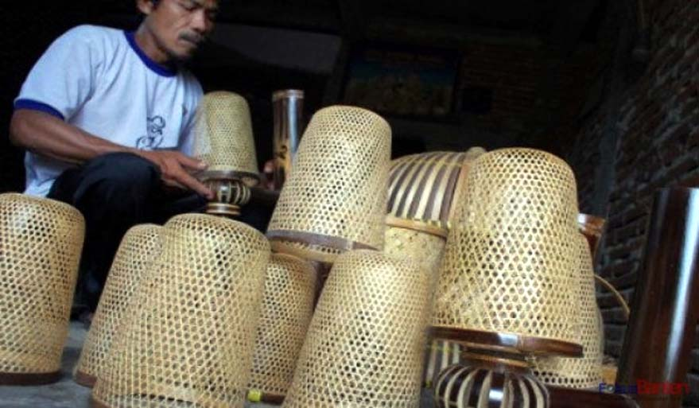
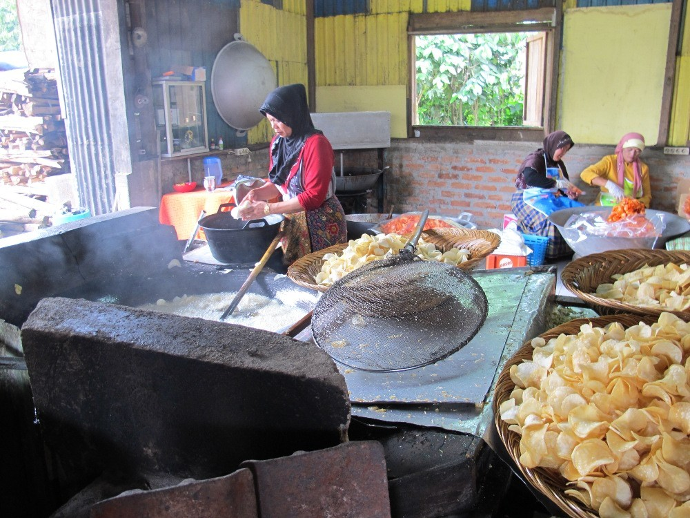

Bukit Margawangi
Spot matahari terbit favorit dengan pemandangan hamparan sawah dan pegunungan.
Selayang Pandang
Data di atas bersifat ilustratif, sesuaikan dengan data resmi terbaru dari Kantor Desa Margawangi.
Pendidikan
Potensi Wisata

Spot matahari terbit favorit dengan pemandangan hamparan sawah dan pegunungan.
Air terjun alami yang menjadi tempat wisata sekaligus sumber air bersih warga.

Ruang belajar bertani dan bercocok tanam ramah lingkungan bagi pengunjung.
UMKM

Kopi robusta hasil budidaya lokal yang diolah langsung oleh kelompok tani.

Anyaman bambu tradisional yang diproduksi oleh masyarakat setempat.

Berbagai camilan khas berbahan dasar singkong, hasil bumi utama Desa Margawangi.
Tradisi & Budaya
Tempat Ibadah
Peta Desa
Maps di atas bersifat ilustratif. Pastikan koordinat dan tampilan peta sesuai dengan lokasi Desa Margawangi yang sebenarnya.